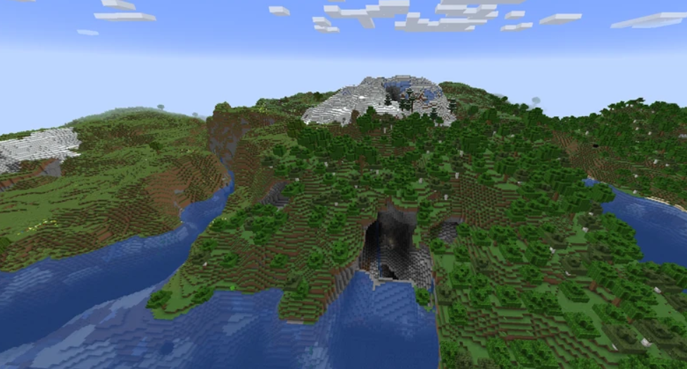
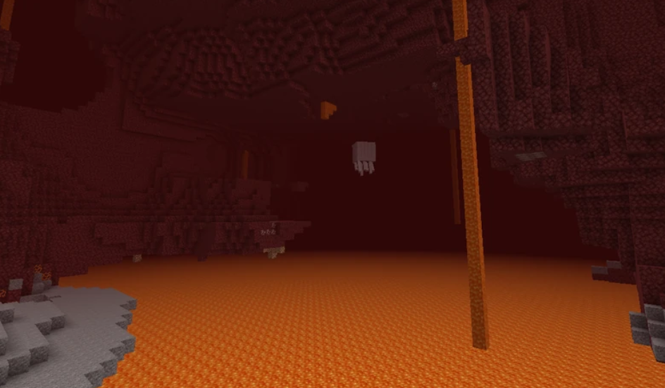
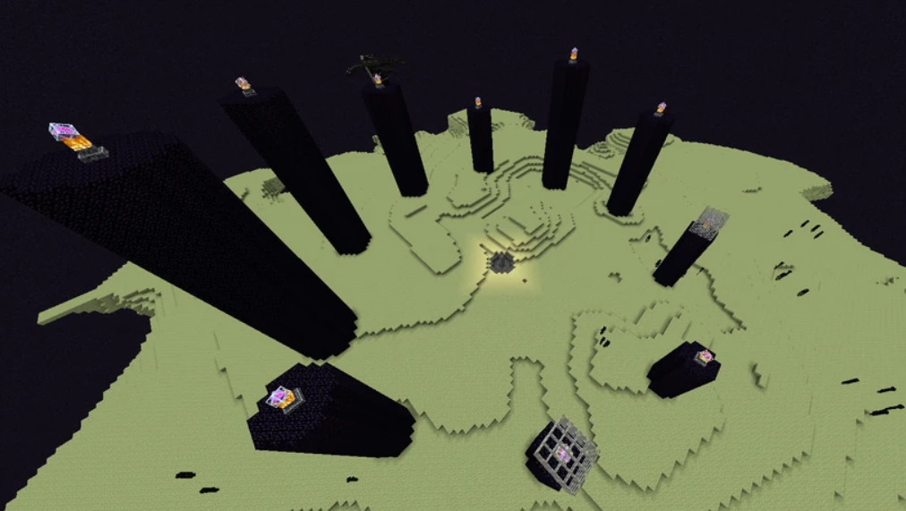

¡Manual definitivo para principiantes en Minecraft!

Que son las dimensiones?
Las dimensiones son reinos, territorios o espacios accesibles dentro de un mundo de Minecraft caracterizados por una forma de generación, biomas y estructuras, y otras cosas exclusivas de cada dimensión. Los jugadores pueden explorar y descubrir varias dimensiones en Minecraft, normalmente mediante el uso de portales. A continuación, se hablara de cada uno de ellos
La superficie
Es la dimensión principal de Minecraft. Tiene una gran variedad de biomas únicos para explorar, y es fácilmente la
más diversa de las dimensiones. Los jugadores suelen pasar la mayor parte de su tiempo en esta dimensión.
Es la única dimensión que se conforma por formaciones cavernosas, montañosas y otros elementos que nutren la topografía
del terreno como ríos o lagos, es la dimensión que posee una mayor diversidad en cuanto a fauna y flora, del mismo modo,
es la única dimensión donde existe una división evidente del horizonte
Alguna de las características únicas de la superficia:
- Dormir en una cama salta la noche y fija el punto de aparición (explota cuando se usa en otras dimensiones).
- La única dimensión conocida con cambios climáticos, siendo estos la lluvia, tormentas y tormentas de nieve.
- Mayor velocidad de desplazamiento.
- El mayor número de biomas de cualquier dimensión.
- Océanos que contienen agua.
- Muchas estructuras generadas naturalmente.
- La mayoría de tipos de criaturas.
- Un ciclo de día y noche.

El nether
Es una dimensión que contiene océanos de lava. El terreno se compone principalmente de netherrack y suele considerarse el submundo del juego. Al entrar en un portal del Nether desde la Superficie se llevará al jugador a esta dimensión. A pesar de la naturaleza hostil de la dimensión, todavía hay momentos de paz, aunque son pocos y distantes entre sí.
Características únicas del nether:
- Terreno caótico, desordenado, peligroso, como una cueva.
- Hongos enormes.
- Un océano de lava.
- Un techo de piedra base.
- Menas especiales.
- Los trueques de piglins.
- Bastiones en ruinas y Fortalezas del Nether.
- Mayor velocidad de desplazamiento.

El end
Es una dimensión espacial con islas flotantes de piedra del End, accesible con un portal del End en una fortaleza. Se suele considerar lo contrario al Nether. El End es un entorno estéril, pero es el único lugar donde se pueden obtener algunos de los objetos más singulares y útiles del juego, como los élitros o las cajas de shulker.
Características únicas del end:
- Casi no hay piedra base.
- Acceso directo al vacío.
- Islas flotantes de piedra del End.
- Ciudades del End.
- Uno de los jefes del juego, el Enderdragón.
